import pandas as pd
import numpy as np
import matplotlib.pyplot as plt
import seaborn as sns
import plotly.express as px
import plotly.io as pio
# in terminal: jupyter nbextension enable --py widgetsnbextension
pio.renderers.default = "png"un-data qmd edition
Guided practice
1. Download the Gross Domestic Product (GDP) per capita dataset from http://data.un.org/Data.aspx?d=WDI&f=Indicator_Code%3aNY.GDP.PCAP.PP.KD. Rename it to gdp_per_capita.csv and place it in the data folder of your project repository.
3. In the first cell of your notebook, import the required packages with their customary aliases as follows:
4. Using the pandas read_csv() function, read the GDP dataset into your notebook as a DataFrame called gdp_df. After reading it in, inspect the first 10 rows and then inspect the last 10 rows.
gdp_df = pd.DataFrame(pd.read_csv("../data/gdp_per_capita.csv"))
gdp_df.head(3)| Country or Area | Year | Value | Value Footnotes | |
|---|---|---|---|---|
| 0 | Afghanistan | 2021 | 1517.016266 | NaN |
| 1 | Afghanistan | 2020 | 1968.341002 | NaN |
| 2 | Afghanistan | 2019 | 2079.921861 | NaN |
5. Drop the ‘Value Footnotes’ column, and rename the remaining columns to ‘Country’, ‘Year’, and ‘GDP_Per_Capita’.
gdp_df = gdp_df.drop(columns=["Value Footnotes"]).rename(
columns={"Country or Area": "Country", "Value": "GDP_Per_Capita"}
) # .drop() removes value footnotes, and .rename(columns={}) names the columns what we want
gdp_df.info() # will show datatypes of each column<class 'pandas.core.frame.DataFrame'>
RangeIndex: 7662 entries, 0 to 7661
Data columns (total 3 columns):
# Column Non-Null Count Dtype
--- ------ -------------- -----
0 Country 7662 non-null object
1 Year 7662 non-null int64
2 GDP_Per_Capita 7662 non-null float64
dtypes: float64(1), int64(1), object(1)
memory usage: 179.7+ KB6. How many rows and columns does gdp_df have? What are the data types of its columns? If any of the columns are not the expected types, figure out why and fix it.
change the dtype of the Country column to string
gdp_df["Country"] = gdp_df["Country"].astype("string")
gdp_df.shape # outputs (rows, columns) (7662, 3)- there are 7662 rows and 3 columns in the dataframe gdp_df, excluding the index column and header rows. The ‘Country’ column is listed as Object rather than String which indicates more than one data type in the column. Using .astype(‘string’) I can convert the column type to str, although this is not typically necessary in a pandas df
7. Which years are represented in this dataset? Take a look at the number of observations per year. What do you notice?
see the range of years
display(gdp_df["Year"].value_counts().sort_index())Year
1990 207
1991 208
1992 210
1993 211
1994 213
1995 223
1996 223
1997 226
1998 226
1999 227
2000 233
2001 234
2002 235
2003 235
2004 236
2005 236
2006 237
2007 237
2008 238
2009 239
2010 239
2011 240
2012 240
2013 242
2014 242
2015 242
2016 242
2017 242
2018 242
2019 242
2020 242
2021 241
2022 232
Name: count, dtype: int64- There are 33 years represented: 1990 - 2022. There are an inconsistent number of measurements taken per year, which indicates a change in the number of countries throughout the time period, or an unmeasured GDP during some years for some countries
8. How many countries are represented in this dataset? Which countries are least represented in the dataset? Why do you think these countries have so few observations?
count the number of unique years in the ‘Country’ col
display(f'Number of unique entries in "Country" col = {gdp_df["Country"].nunique()}')'Number of unique entries in "Country" col = 242'get the value counts for each country and view the least represented
gdp_df["Country"].value_counts().tail(7)Country
Nauru 19
Cayman Islands 16
Kosovo 15
Sint Maarten (Dutch part) 14
Turks and Caicos Islands 12
Somalia 10
Djibouti 10
Name: count, dtype: Int64- There are 242 uniques values in the ‘Country’ column. Some of these values are not countries, but areas or regions, so it does not match the listed UN member states number of 195. The least represented countries are Djibouti, Somalia, and a handful of smaller island nations like the cayman islands and countries like Kosovo which have not been high exporters due to war, famine, territorial disputes with neighboring countries, geographic isolation, or lack of resources, etc.
9. Create a new dataframe by subsetting gdp_df to just the year 2021. Call this new dataframe gdp_2021.
use .loc() to find only the rows that contain the year 2021
gdp_2021 = gdp_df.loc[gdp_df["Year"] == 2021]
display(gdp_2021)| Country | Year | GDP_Per_Capita | |
|---|---|---|---|
| 0 | Afghanistan | 2021 | 1517.016266 |
| 21 | Africa Eastern and Southern | 2021 | 3519.174840 |
| 54 | Africa Western and Central | 2021 | 4014.607965 |
| 87 | Albania | 2021 | 14595.944386 |
| 120 | Algeria | 2021 | 11029.138782 |
| ... | ... | ... | ... |
| 7502 | Viet Nam | 2021 | 10628.219166 |
| 7535 | West Bank and Gaza | 2021 | 5641.044400 |
| 7564 | World | 2021 | 17055.357429 |
| 7597 | Zambia | 2021 | 3236.788981 |
| 7630 | Zimbabwe | 2021 | 2115.144555 |
241 rows × 3 columns
10. Use .describe() to find the summary statistics for GDP per capita in 2021.
gdp_2021["GDP_Per_Capita"].describe()count 241.000000
mean 20711.570080
std 20916.978968
min 714.066712
25% 5044.196028
50% 13754.802423
75% 30974.370692
max 115683.493708
Name: GDP_Per_Capita, dtype: float6411. Create a histogram of GDP Per Capita numbers for 2021 (you may wish to adjust the number of bins for your histogram). How would you describe the shape of the distribution?
gdp_2021_hist = sns.histplot(gdp_2021["GDP_Per_Capita"], bins=20)
plt.title("GDP Per Capita for the year 2021");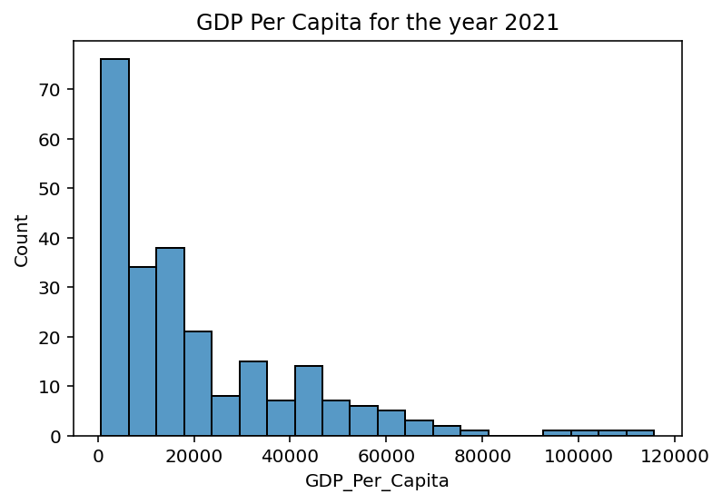
- This is a right skewed histogram with one mode
plotly_hist = px.histogram(gdp_2021['GDP_Per_Capita'],nbins=20, x='GDP_Per_Capita', title = 'GDP Per Capita for 2021')
plotly_hist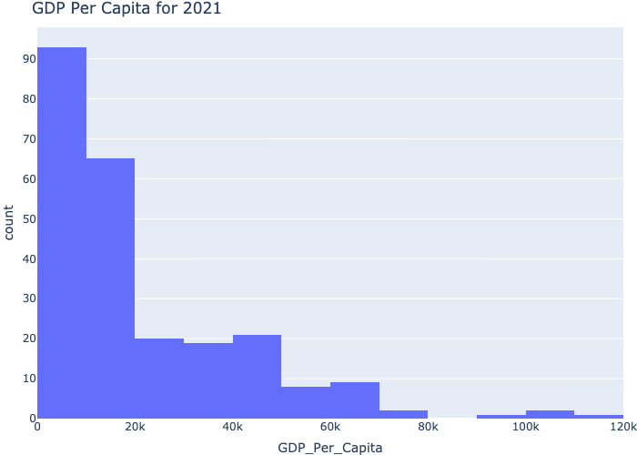
12. Find the top 5 counties and bottom 5 countries by GDP per capita in 2021.
Sort gdp_2021 by GDP per capita and view the top 5 countries
display(gdp_2021.nlargest(5, "GDP_Per_Capita"))| Country | Year | GDP_Per_Capita | |
|---|---|---|---|
| 4147 | Luxembourg | 2021 | 115683.493708 |
| 6107 | Singapore | 2021 | 107741.118436 |
| 3278 | Ireland | 2021 | 102785.490239 |
| 5745 | Qatar | 2021 | 92862.571798 |
| 680 | Bermuda | 2021 | 78570.489515 |
Sort gdp_2021 by GDP per capita and view the bottom 5 countries
display(gdp_2021.nsmallest(5, "GDP_Per_Capita"))| Country | Year | GDP_Per_Capita | |
|---|---|---|---|
| 972 | Burundi | 2021 | 714.066712 |
| 1216 | Central African Republic | 2021 | 837.504686 |
| 1629 | Dem. Rep. Congo | 2021 | 1073.643271 |
| 6272 | Somalia | 2021 | 1136.735989 |
| 5073 | Niger | 2021 | 1186.576809 |
- The top five countries are Bermuda, Qatar, Ireland, Singapore, and Luxembourg.
- The bottom five countries are Burundi, Central African Republic, DRC, Somalia, and Niger.
13. Now, return to the full dataset, gdp_df. Pivot the data for 1990 and 2021 (using the pandas .pivot_table() method or another method) so that each row corresponds to a country, each column corresponds to a year, and the values in the table give the GDP_Per_Capita amount. Drop any rows that are missing values for either 1990 or 2021. Save the result to a dataframe named gdp_pivoted.
gdp_pivoted = (
gdp_df
[gdp_df["Year"].isin([1990, 2021])]
.pivot_table(
values="GDP_Per_Capita",
index="Country",
columns="Year")
.dropna()
)
display(gdp_pivoted)| Year | 1990 | 2021 |
|---|---|---|
| Country | ||
| Africa Eastern and Southern | 3037.297466 | 3519.174840 |
| Africa Western and Central | 2788.301039 | 4014.607965 |
| Albania | 4827.027705 | 14595.944386 |
| Algeria | 8828.874473 | 11029.138782 |
| Angola | 5793.084512 | 5911.835657 |
| ... | ... | ... |
| Vanuatu | 2774.138350 | 2800.493866 |
| Viet Nam | 2099.394649 | 10628.219166 |
| World | 9705.981267 | 17055.357429 |
| Zambia | 2290.039226 | 3236.788981 |
| Zimbabwe | 2704.757299 | 2115.144555 |
206 rows × 2 columns
14. Create a new column in gdp_pivoted named Percent_Change. This column should contain the percent change in GDP_Per_Capita from 1990 to 2021. Hint: Percent change is calculated as 100*(New Value - Old Value) / Old Value.
gdp_pivoted["Percent Change"] = (
100 * (gdp_pivoted[2021] - gdp_pivoted[1990]) / gdp_pivoted[1990]
)
display(gdp_pivoted.head(3))| Year | 1990 | 2021 | Percent Change |
|---|---|---|---|
| Country | |||
| Africa Eastern and Southern | 3037.297466 | 3519.174840 | 15.865334 |
| Africa Western and Central | 2788.301039 | 4014.607965 | 43.980435 |
| Albania | 4827.027705 | 14595.944386 | 202.379544 |
15. How many countries experienced a negative percent change in GDP per capita from 1990 to 2021?
num_countries = (gdp_pivoted['Percent Change'] < 0).sum()
display(f'There were {num_countries} countries with a negative % change from 1990 to 2021')'There were 19 countries with a negative % change from 1990 to 2021'- There were 19 countries with a negative percent change from 1990 to 2021
16. Which country had the highest % change in GDP per capita? Create a line plot showing this country’s GDP per capita for all years from 1990 to 2022. Create another showing the country with the second highest % change in GDP. How do the trends in these countries compare?
Bonus: Put both line charts on the same plot.
- Equatorial Guinea had the highest percent change from 1990 to 2021 with a 1463.08% growth # determine highest percent change and extract country name
highest_pct_change = gdp_pivoted.nlargest(1,'Percent Change').reset_index()['Country']
# determine second highest percent change and extract country name
second_pct_change = gdp_pivoted.nlargest(2,'Percent Change').nsmallest(1, 'Percent Change').reset_index()['Country']
# extract data corresponding to the countries from gdp_df
country_1_data = gdp_df.loc[gdp_df["Country"] == highest_pct_change[0]]
country_1_data_slice = country_1_data[country_1_data["Year"].isin(list(range(1990, 2023)))]
country_2_data = gdp_df.loc[gdp_df["Country"] == second_pct_change[0]]
country_2_data_slice = country_2_data[country_2_data["Year"].isin(list(range(1990, 2023)))]
# initialize 3 subplots for both countries independent and together
fig, ax = plt.subplots(nrows=1, ncols=3, sharey=True, figsize=(10,6))
fig.tight_layout()
# Country 1 subplot
plt.subplot(131)
plt.xlabel("Year (1990 - 2022)")
plt.ylabel("GDP Per Capita($)")
plt.title(highest_pct_change[0])
plt.plot(country_1_data_slice["Year"], country_1_data_slice["GDP_Per_Capita"], color='b')
# Country 2 subplot
plt.subplot(132)
plt.xlabel("Year (1990 - 2022)")
plt.title(second_pct_change[0])
plt.plot(country_2_data_slice["Year"], country_2_data_slice["GDP_Per_Capita"], color='r')
# Both countries on the same plot
plt.subplot(133)
plt.xlabel("Year (1990 - 2022)")
plt.title(highest_pct_change[0] + ' & ' + second_pct_change[0])
plt.plot(country_2_data_slice["Year"],
country_2_data_slice["GDP_Per_Capita"],
color="r",
label=second_pct_change[0])
plt.plot(
country_1_data_slice["Year"],
country_1_data_slice["GDP_Per_Capita"],
color="b",
label=highest_pct_change[0],
)
plt.legend();
plt.savefig("../data/example.svg", format = 'svg', dpi = 1200)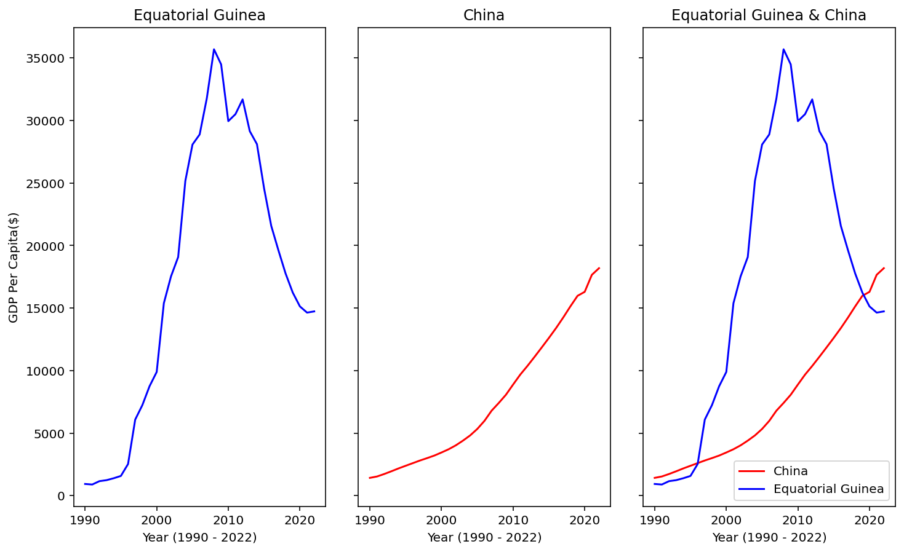
- These line graphs show Equatorial Guinea’s astronomical ascent and then rapid decline in GDP per capita, whereas China has had a near exponential increase in GDP per capita continuously increaseing throughout the time period shown on the plot. These are the top two countries in percent change GDP per capita, though the path taken to get from a similar starting point in 1990 to 2018 is very different.
Plotly used below for practice
gdp_df_top_two = gdp_df[gdp_df['Country'].isin([highest_pct_change[0], second_pct_change[0]])].sort_values(['Country', 'Year'])
gdp_df_top_two['Country'] = gdp_df_top_two['Country'].astype('category')
gdp_df_top_two
fig = px.line(gdp_df_top_two, x='Year', y='GDP_Per_Capita', facet_col='Country', title='Change in GDP per capita 1990 - 2022')
fig2 = px.line(gdp_df_top_two, x='Year', y='GDP_Per_Capita', color = 'Country', title='Change in GDP per capita 1990 - 2022')
display(fig)
display(fig2)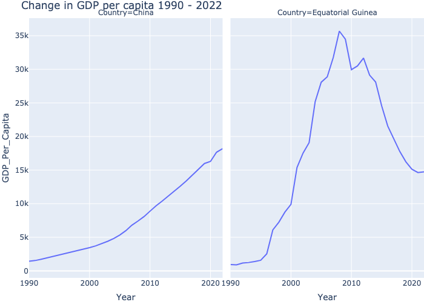
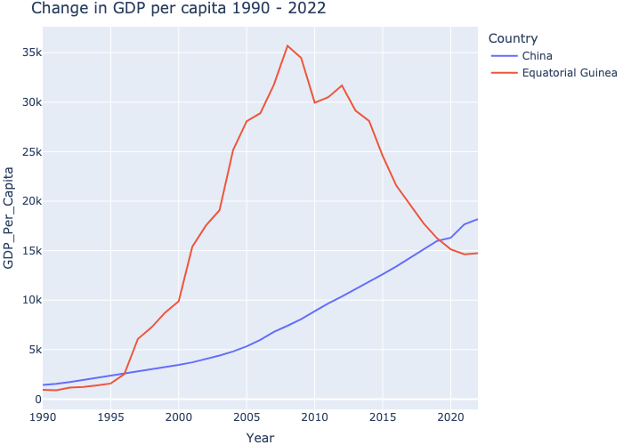
17. Read in continents.csv contained in the data folder into a new dataframe called continents. We will be using this dataframe to add a new column to our dataset.
continents = pd.DataFrame(pd.read_csv("../data/continents.csv"))
display(continents.head(3))| Continent | Country | |
|---|---|---|
| 0 | Asia | Afghanistan |
| 1 | Europe | Albania |
| 2 | Africa | Algeria |
18. Merge gdp_df and continents. Keep only the countries that appear in both data frames. Save the result back to gdp_df.
# merging the dataframes on the 'Country' column
gdp_df = pd.merge(left=gdp_df, right=continents, on="Country", how="inner", validate='many_to_one')
display(gdp_df.head(5))| Country | Year | GDP_Per_Capita | Continent | |
|---|---|---|---|---|
| 0 | Afghanistan | 2021 | 1517.016266 | Asia |
| 1 | Afghanistan | 2020 | 1968.341002 | Asia |
| 2 | Afghanistan | 2019 | 2079.921861 | Asia |
| 3 | Afghanistan | 2018 | 2060.698973 | Asia |
| 4 | Afghanistan | 2017 | 2096.093111 | Asia |
19. Determine the number of countries per continent. Create a bar chart showing this.
#y = gdp_df.drop_duplicates(subset="Country")["Continent"].value_counts()
fig = (
plt.bar(gdp_df.drop_duplicates(subset="Country")["Continent"].value_counts().index,
gdp_df.drop_duplicates(subset="Country")["Continent"].value_counts(),
color=["r", "y", "g", "b", "c", "w"])
)
plt.tight_layout()
plt.xlabel("Continent")
plt.ylabel("Number of Countries")
plt.title("Number of countries in each continent");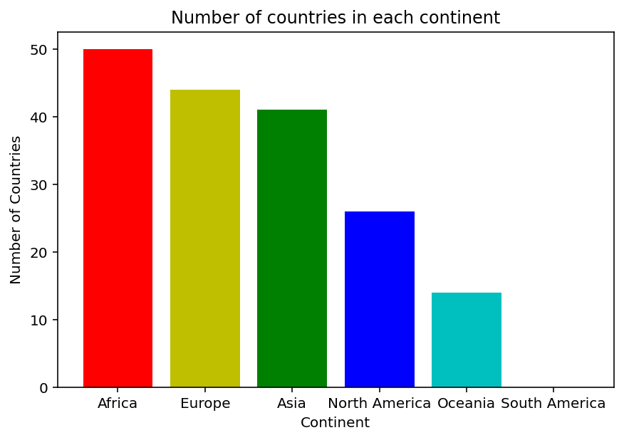
Plotly used below for practice
fig = (
px.histogram(
gdp_df.drop_duplicates(subset="Country")["Continent"],
x="Continent",
title="Number of countries in each continent",
color="Continent",
)
.update_xaxes(categoryorder="total descending")
.update_layout(yaxis_title="Number of countries")
)
fig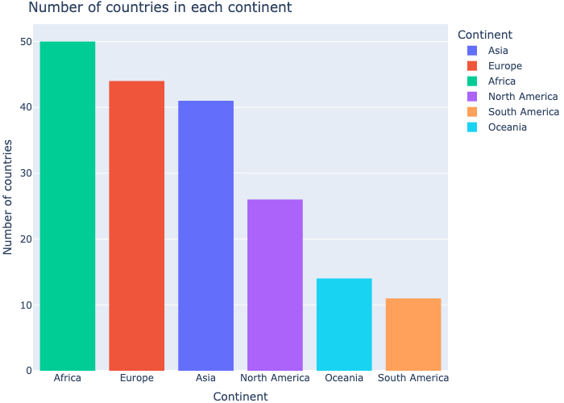
20. Create a seaborn boxplot showing GDP per capita in 2021 split out by continent. What do you notice?
plt.figure(figsize=(9,5))
sns.boxplot(
data= gdp_df[gdp_df['Year']==2021],
x='Continent',
y='GDP_Per_Capita'
)
plt.tight_layout()
plt.xticks(rotation=45)
plt.ylabel("GDP Per Capita")
plt.xlabel("Continent")
plt.title("2021 GDP Per Capita by Continent");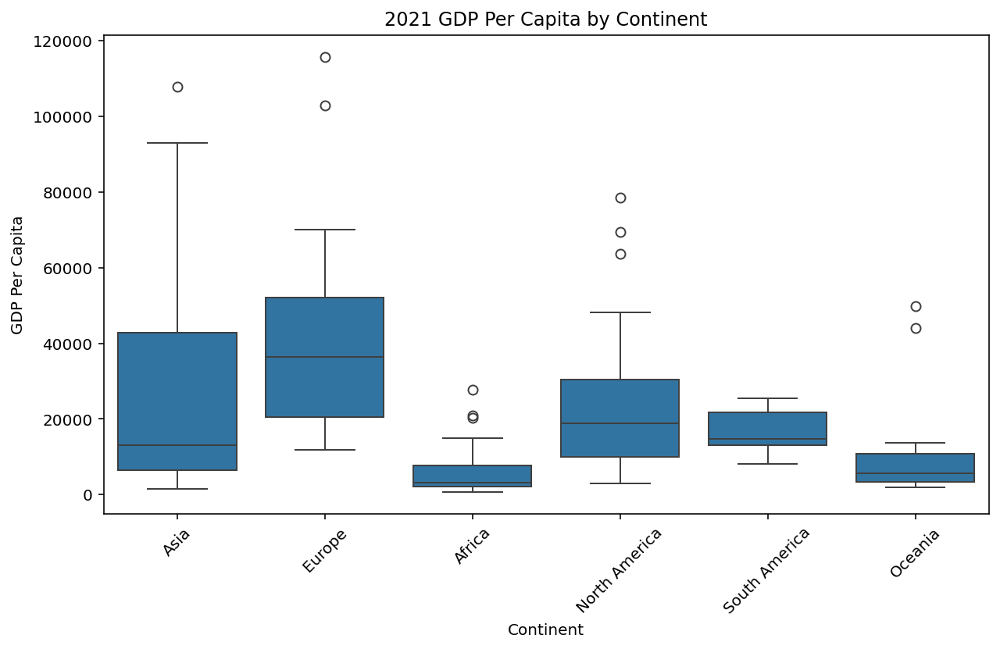
- every continent has high gdp countries that produce well outside the upper whisker limit
- the IQR for Asia, North America, and Europe are much bigger, suggesting more variability in the GDP per capita on those continents
- Africa, Oceania, and South America have smaller IQR and range in general indicating less variability in the AGDP for those continents
Plotly used below for practice
fig = (
px.box(gdp_df[gdp_df['Year']==2021],
x='Continent',
y='GDP_Per_Capita',
title='2021 GDP per capita by continent',
color='Continent')
.update_xaxes(categoryorder='total ascending')
.update_layout(yaxis_title="GDP per capita")
)
fig.show()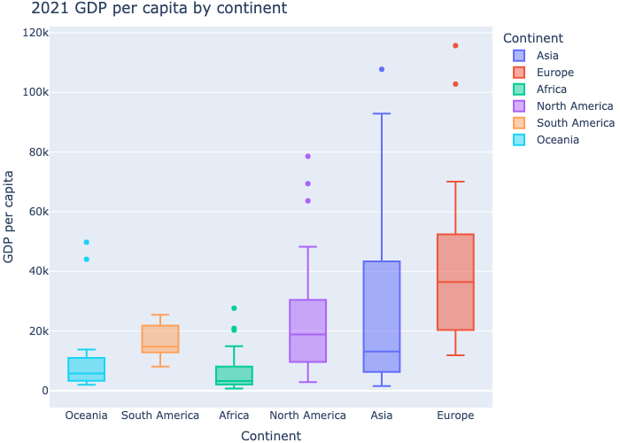
21. Download the full csv containing Life expectancy at birth, total (years) from https://data.worldbank.org/indicator/SP.DYN.LE00.IN?name_desc=false. Read this data into a DataFrame named life_expectancy. Note: When reading this dataset it, you may encounter an error. Modify your read_csv call to correct this without modifying the original csv file.
life_expectancy = pd.read_csv(
"../data/Life expectancy at birth/API_SP.DYN.LE00.IN_DS2_en_csv_v2_31632.csv",
header=2,
)22. Drop the Country Code, Indicator Name, and Indicator Code columns. Then use .melt() to convert your data from wide to long. That is, instead of having one row per country and multiple colums per year, we want to have multiple rows per country and a single column for year. After melting, rename the columns to Country, Year, and Life_Expectancy.
# drop undesired columns, melt to make data long, rename columns, and sort
life_expectancy = (
life_expectancy.drop(
columns=["Country Code",
"Indicator Name",
"Indicator Code"]
)
.melt(
id_vars="Country Name",
var_name="Year",
value_name="Life Expectancy",
)
.rename(
columns={"Country Name": "Country"})
.sort_values(
["Country", "Year"])
)
display(life_expectancy)| Country | Year | Life Expectancy | |
|---|---|---|---|
| 2 | Afghanistan | 1960 | 32.535 |
| 268 | Afghanistan | 1961 | 33.068 |
| 534 | Afghanistan | 1962 | 33.547 |
| 800 | Afghanistan | 1963 | 34.016 |
| 1066 | Afghanistan | 1964 | 34.494 |
| ... | ... | ... | ... |
| 16225 | Zimbabwe | 2020 | 61.124 |
| 16491 | Zimbabwe | 2021 | 59.253 |
| 16757 | Zimbabwe | 2022 | 59.391 |
| 17023 | Zimbabwe | 2023 | NaN |
| 17289 | Zimbabwe | Unnamed: 68 | NaN |
17290 rows × 3 columns
23. What was the first country with a life expectancy to exceed 80?
# sort by year and find the first value that is >= 80
display(
life_expectancy.sort_values(["Year"])
.loc[life_expectancy["Life Expectancy"] >= 80]
.iloc[0]
)Country Japan
Year 1996
Life Expectancy 80.219756
Name: 9695, dtype: object- The first country to have a life expectancy >= 80 was Japan in 1996.
24. Merge gdp_df and life_expectancy, keeping all countries and years that appear in both DataFrames. Save the result to a new DataFrame named gdp_le. If you get any errors in doing this, read them carefully and correct them. Look at the first five rows of your new data frame to confirm it merged correctly. Also, check the last five rows to make sure the data is clean and as expected.
# Clean up dfs to merge
life_expectancy = life_expectancy.dropna()
life_expectancy["Year"] = pd.to_numeric(life_expectancy["Year"])
# merge the dfs on the two columns, keeping only values in both dfs.
gdp_le = pd.merge(gdp_df, life_expectancy, on=["Country", "Year"], how="inner")
#export to csv
gdp_le.to_csv("../data/gdp_le.csv")
display(gdp_le.head(), gdp_le.tail())| Country | Year | GDP_Per_Capita | Continent | Life Expectancy | |
|---|---|---|---|---|---|
| 0 | Afghanistan | 2021 | 1517.016266 | Asia | 61.982 |
| 1 | Afghanistan | 2020 | 1968.341002 | Asia | 62.575 |
| 2 | Afghanistan | 2019 | 2079.921861 | Asia | 63.565 |
| 3 | Afghanistan | 2018 | 2060.698973 | Asia | 63.081 |
| 4 | Afghanistan | 2017 | 2096.093111 | Asia | 63.016 |
| Country | Year | GDP_Per_Capita | Continent | Life Expectancy | |
|---|---|---|---|---|---|
| 5499 | Zimbabwe | 1994 | 2670.106615 | Africa | 52.588 |
| 5500 | Zimbabwe | 1993 | 2458.783255 | Africa | 54.426 |
| 5501 | Zimbabwe | 1992 | 2468.278257 | Africa | 56.435 |
| 5502 | Zimbabwe | 1991 | 2781.787843 | Africa | 58.091 |
| 5503 | Zimbabwe | 1990 | 2704.757299 | Africa | 59.426 |
- After dropping NaNs and changing columns to the appropriate datatypes, the two dataframes are merged and the resulting df looks clean at head and tail.
25. Create a new DataFrame, named gdp_le_2021 by extracting data for the year 2021 from gdp_le. How many countries have a life expectancy of at least 80 in 2021?
# Slice the year 2021
gdp_le_2021 = gdp_le[gdp_le["Year"].isin([2021])].copy()
# .copy() makes this it's own dataframe so it no longer references the old dataframe object.
# slice life expectancy > 80
display(gdp_le_2021.loc[gdp_le_2021["Life Expectancy"] >= 80].count()['Country'])np.int64(31)- 31 countries have a life expectancy of at least 80 in 2021
26. Find the countries that had the top 3 largest GDP per capita figures for 2021. Create a seaborn FacetGrid showing the change in life expectancy over time for these three countries. Each individual figure in the facet grid will represent a single country.
- the countries with the 3 largest GDP per capita in 2021 were Luxembourg, Singapore, and Ireland
# find the countries with the 3 largest GDP per capita in 2021
# display(gdp_le_2021.nlargest(3, "GDP_Per_Capita"))
top_three_gdp = gdp_le_2021.nlargest(3, "GDP_Per_Capita")['Country']
# slice out the desired countries into a new dataframe to plot
top_three_countries_le_df = life_expectancy[
life_expectancy["Country"].isin(top_three_gdp)]
# create seaborn facet grid for the ∆LE over time for top three countries
grid =(
sns.FacetGrid(top_three_countries_le_df,
col="Country")
.map_dataframe(sns.lineplot,
x="Year",
y="Life Expectancy"
)
)
plt.subplots_adjust(top=0.85)
plt.suptitle("Change in life expectancy over time");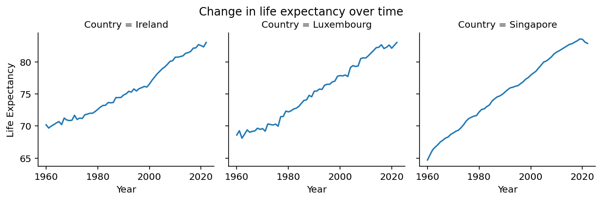
Plotly used below for practice.
top_three_countries_le_df = top_three_countries_le_df.reset_index()
fig = (
px.line(top_three_countries_le_df,
x='Year',
y='Life Expectancy',
facet_col='Country',
color='Country',
title='2021 Three largest GDP per Capita - Life Expectancy')
)
fig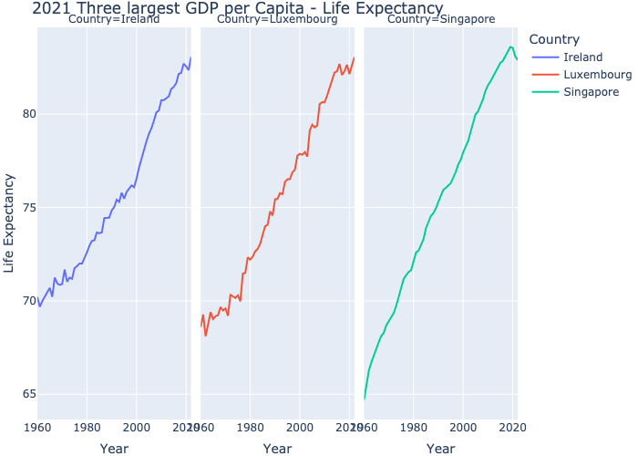
27. Create a scatter plot of Life Expectancy vs GDP per Capita for the year 2021. What do you notice?
sns.scatterplot(gdp_le_2021, x="GDP_Per_Capita", y="Life Expectancy")
plt.title("GDP per capita vs Life Expectancy (2021)")
plt.xlabel("GDP per capita ($)")
plt.ylabel("Life Expectancy (yrs)");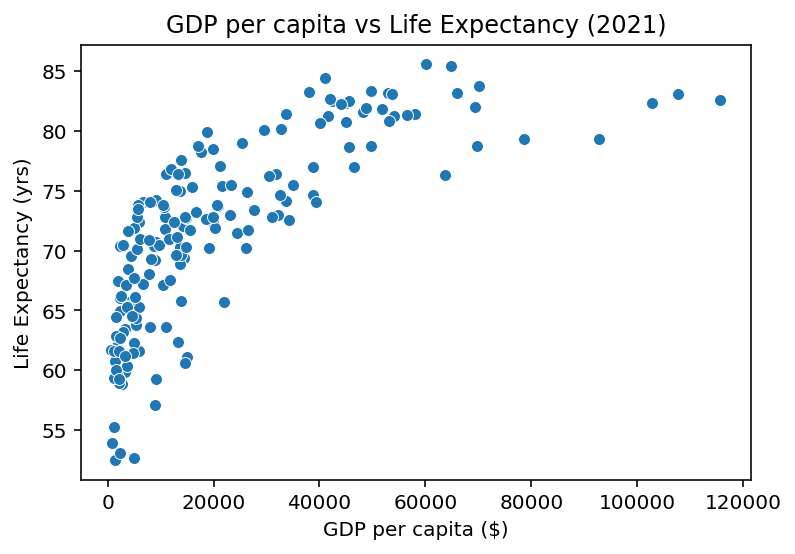
- The scatterplot indicates a positive association between GDP per capita and life expectancy that takes on a vaguely logarithmic shape, meaning that generally as one goes up the other also goes up, but there is a ceiling around 85 years where countries’ GDP per capita can continue to increase, but the life expectancy rate of increase decreases. There can be no causation inferred from this data alone.
Plotly used below for practice
fig = (
px.scatter(gdp_le_2021,
x="GDP_Per_Capita",
y="Life Expectancy",
title='GDP per capita vs. Life Expectancy (2021)',
color='Life Expectancy',
hover_data=["GDP_Per_Capita", "Life Expectancy", "Country"])
.update_layout(xaxis_title="GDP per capita")
)
fig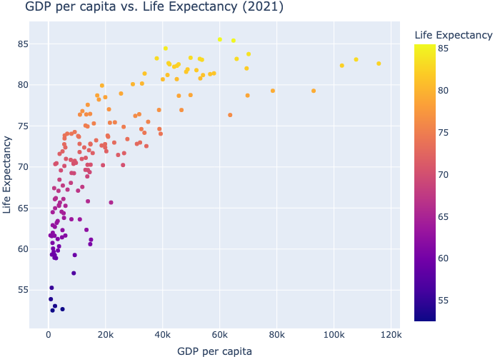
28. Find the correlation between Life Expectancy and GDP per Capita for the year 2021. What is the meaning of this number?
print(
"correlation = "
+ str(gdp_le_2021["GDP_Per_Capita"]
.corr(gdp_le_2021["Life Expectancy"]))
)correlation = 0.7450812403297986- Correlation (R) is a value between -1 and 1 which indicates the strength and type of association between two variables. A correlation of 0.745… indicates a moderately strong positive association between GDP per capita and life expectancy, meaning it is highly likely that to some extent, as one of those variables increases, so will the other.
29. Add a column to gdp_le_2021 and calculate the logarithm of GDP per capita. Find the correlation between the log of GDP per capita and life expectancy. How does this compare to the calculation in the previous part? Look at a scatter plot to see if the result of this calculation makes sense.
# Add column: Log(GDP per Capita)
gdp_le_2021["Log(GDP/Cap)"] = np.log(gdp_le_2021["GDP_Per_Capita"])
R = gdp_le_2021["Log(GDP/Cap)"].corr(gdp_le_2021["Life Expectancy"])
print("correlation = " + str(R))
log_gdp_vs_le = sns.scatterplot(gdp_le_2021, x="Log(GDP/Cap)", y="Life Expectancy")
plt.title("Log(GDP per capita) vs Life Expectancy (2021)")
plt.xlabel("Log(GDP per capita) ($)")
plt.ylabel("Life Expectancy (yrs)")
plt.text(7, 80, "R = " + str(round(R, 4)));correlation = 0.8465749797261862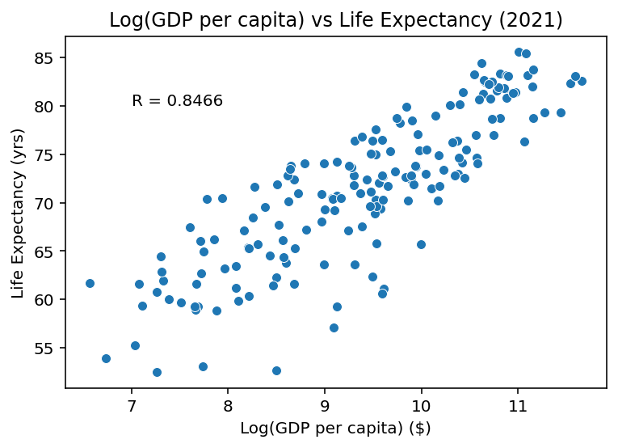
- This correlation of 0.847 is even stronger than the previous correlation, meaning there is an even higher association between the log(gdp per capita) and life expectancy than just gdp per capita and L.E. The scatter plot shows a more linear trend that is positively associated and fairly strong.
Plotly used below for practice
fig = (
px.scatter(gdp_le_2021,
x="Log(GDP/Cap)",
y="Life Expectancy",
title='Log(GDP per capita) vs. Life Expectancy (2021)',
color='Life Expectancy',
hover_data=["Log(GDP/Cap)", "Life Expectancy", "Country"],
trendline='ols')
)
fig.add_annotation(x=11.75, y=75, text="R = " + str(round(R, 4)), showarrow=False)
display(fig)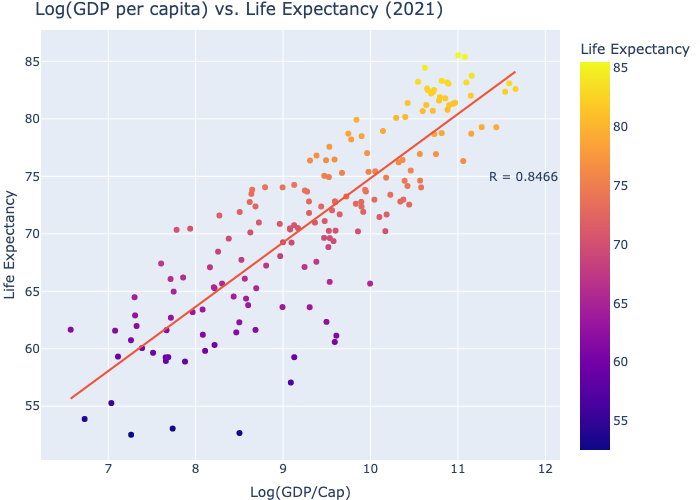
Bonus: Solo Exploration:
1. Choose and download another data set from the UN data http://data.un.org/Explorer.aspx to explore. You may want to combine your new dataset with one or both of the datasets that you already worked with. Report any interesting correlations or trends that you find.
financial_df = pd.DataFrame(pd.read_csv('../data/UNdata_Export_20241010_220413212.csv',
dtype={'Year':'int16', 'Country or Area':'category',
'Description':'category', 'Magnitude':'category'},
usecols=range(1,6))).rename(columns={'Country or Area':'Country', 'Magnitude':'Currency'})
display(financial_df.head())
financial_df.info()
financial_df.shape
financial_df.describe()
financial_df
net_worth_global = financial_df[financial_df['Description'].isin(['NET WORTH', 'NET FINANCIAL WORTH [62-63]'])].sort_values('Value')
net_worth_global| Country | Year | Description | Currency | Value | |
|---|---|---|---|---|---|
| 0 | AUSTRALIA | 2008 | SHARES AND OTHER EQUITY | AUSTRALIAN DOLLA | 250454000000 |
| 1 | AUSTRALIA | 2008 | SHARES AND OTHER EQUITY | AUSTRALIAN DOLLA | 0 |
| 2 | AUSTRALIA | 2008 | SECURITIES OTHER THAN SHARES | AUSTRALIAN DOLLA | 60004000000 |
| 3 | AUSTRALIA | 2008 | SECURITIES OTHER THAN SHARES | AUSTRALIAN DOLLA | 136113000000 |
| 4 | AUSTRALIA | 2008 | OTHER ACCOUNTS RECEIVABLE | AUSTRALIAN DOLLA | 63428000000 |
<class 'pandas.core.frame.DataFrame'>
RangeIndex: 5926 entries, 0 to 5925
Data columns (total 5 columns):
# Column Non-Null Count Dtype
--- ------ -------------- -----
0 Country 5926 non-null category
1 Year 5926 non-null int16
2 Description 5926 non-null category
3 Currency 5926 non-null category
4 Value 5926 non-null int64
dtypes: category(3), int16(1), int64(1)
memory usage: 77.1 KB| Country | Year | Description | Currency | Value | |
|---|---|---|---|---|---|
| 3648 | JAPAN | 2006 | NET FINANCIAL WORTH [62-63] | YEN | -427874000000000 |
| 3654 | JAPAN | 2005 | NET FINANCIAL WORTH [62-63] | YEN | -424368000000000 |
| 3642 | JAPAN | 2007 | NET FINANCIAL WORTH [62-63] | YEN | -414480000000000 |
| 3660 | JAPAN | 2004 | NET FINANCIAL WORTH [62-63] | YEN | -412032000000000 |
| 3666 | JAPAN | 2003 | NET FINANCIAL WORTH [62-63] | YEN | -375120000000000 |
| ... | ... | ... | ... | ... | ... |
| 3653 | JAPAN | 2005 | NET WORTH | YEN | 49262500000000 |
| 3641 | JAPAN | 2007 | NET WORTH | YEN | 63961900000000 |
| 3665 | JAPAN | 2003 | NET WORTH | YEN | 79529900000000 |
| 3671 | JAPAN | 2002 | NET WORTH | YEN | 99158700000000 |
| 3677 | JAPAN | 2001 | NET WORTH | YEN | 132390000000000 |
330 rows × 5 columns
2. If time allows, check out the plotly library to add additional interativity to your plots. https://plotly.com/python/plotly-express/.
UN Data Exploration Bonus Questions
1. Let’s compare the median life expectacy for each across all of the years of data that we have. Perform a groupby on both Year and Continent and then aggregate using the median and save the results to a new object.
a. What type of object results from this?
b. Look at the index of the resulting object. What do you notice about it?
c. Use .loc to select the median life expectancy for Asia in 2010.
d. Use .loc to select the median life expectancy for both Asia and Africa in 2010.
e. Use .loc to select the values for all continents for the year 2010.
f. Use .loc to select the median life expectancy for Asia across all years. Hint: One way to do this is to use the swaplevels method. Clean up dfs for merge
life_expectancy = life_expectancy.dropna()
life_expectancy["Year"] = pd.to_numeric(life_expectancy["Year"])
# merge the dfs on the two columns, keeping only values in both dfs.
life_exp_cont = pd.merge(life_expectancy, continents, on="Country", how="inner")
# Group by year and continent and aggregate median on life expectancy
medians_le = life_exp_cont.groupby(["Year", "Continent"])["Life Expectancy"].median()
display(type(medians_le))
# Look at the index
medians_le.index
# median le for asia 2010
print(medians_le.loc[(2010, "Asia")])
# median le for asia and africa in 2010
display(medians_le.loc[[(2010, "Asia"), (2010, "Africa")]])
# all continents 2010
display(medians_le.loc[(2010)])
# median for asia across all years
medians_le.swaplevel().loc["Asia"]pandas.core.series.Series71.879Year Continent
2010 Asia 71.879
Africa 58.367
Name: Life Expectancy, dtype: float64Continent
Africa 58.367000
Asia 71.879000
Europe 78.481415
North America 74.454000
Oceania 68.030000
South America 73.711000
Name: Life Expectancy, dtype: float64Year
1960 50.6825
1961 52.3640
1962 53.6970
1963 53.8930
1964 54.4120
...
2018 73.9715
2019 74.2105
2020 73.2720
2021 72.4610
2022 73.8165
Name: Life Expectancy, Length: 63, dtype: float642. Group gdp_le by both Year and Continent and find the min, median, and max values for both gdp per capita and life expectancy. Hint: You may want to use the agg method.
a. Look at the columns of the resulting object. What do you notice?
b. Select the median gdp per capita value for Asia in 2010.# grouping by year and continent and aggregating min, median, max for GDP and Life exp.
gdp_le_aggs = gdp_le.groupby(["Year", "Continent"])[
["Life Expectancy", "GDP_Per_Capita"]
].agg(["min", "median", "max"])
# median gdp per capita for asia, 2010
display(
"Asia, 2010 median GDPpC = "
+ str(gdp_le_aggs.loc[(2010, "Asia")][("GDP_Per_Capita", "median")])
)'Asia, 2010 median GDPpC = 8602.903815568548'- the columns are also labeled with tuples.
3. In this question, we’ll see how the median gdp per capita has changed over time. Start by creating a Series, gdp_median_per_year by grouping by the Year variable and calculating the median gdp per capita.
a. Convert gdp_median_per_year to a DataFrame by using the [reset_index method](https://pandas.pydata.org/docs/reference/api/pandas.Series.reset_index.html).
b. The [shift method](https://pandas.pydata.org/docs/reference/api/pandas.DataFrame.shift.html) will allow you to compare values across rows. Use this method to create a new column showing the change in gdp per capita since the prior year.
c. How many times was there a drop in median gdp per capita from one year to the next? gdp_median_per_year = gdp_le.groupby(['Year'])['GDP_Per_Capita'].median().reset_index()
# create a new column showing the change in gdp per capita since the prior year.
gdp_median_per_year['Shift'] = gdp_median_per_year['GDP_Per_Capita'].shift(periods=1).fillna(value=0)
gdp_median_per_year['Difference'] = gdp_median_per_year['GDP_Per_Capita'] - gdp_median_per_year['Shift']
# How many times was there a drop in median gdp per capita from one year to the next?
display(gdp_median_per_year[gdp_median_per_year['Difference'] < 0]['GDP_Per_Capita'].count())np.int64(7)4. Now, let’s expand on the prior question to find the change in GDP from year to year for each country.
a. Add a new column to the gdp_le DataFrame showing the change in gdp per capita from the prior year for that country. Hint: You can combine groupby with the shift method.
b. Which country had the largest one year increase in gdp per capita? Which had the largest one year drop in gdp per capita?gdp_le_countries_grouped = gdp_le.groupby(['Country', 'Year'])['GDP_Per_Capita'].median().reset_index()
gdp_le_countries_grouped["Previous Year's GDPPC"] = gdp_le_countries_grouped.groupby(['Country'])['GDP_Per_Capita'].shift()
gdp_le_countries_grouped['Difference'] = gdp_le_countries_grouped['GDP_Per_Capita'] - gdp_le_countries_grouped["Previous Year's GDPPC"]
largest_increase = gdp_le_countries_grouped[gdp_le_countries_grouped["Difference"] > 0].sort_values('Difference', ascending=False).reset_index().iloc[0]
largest_decrease = gdp_le_countries_grouped[gdp_le_countries_grouped["Difference"] < 0].sort_values('Difference').reset_index().iloc[0]
display([largest_increase, largest_decrease])[index 2910
Country Macao SAR, China
Year 2011
GDP_Per_Capita 135365.387353
Previous Year's GDPPC 114042.495308
Difference 21322.892045
Name: 0, dtype: object,
index 2919
Country Macao SAR, China
Year 2020
GDP_Per_Capita 55158.712729
Previous Year's GDPPC 122822.124456
Difference -67663.411727
Name: 0, dtype: object]5. When looking at time series data, there can often be a large amount of observation to observation variability, making it more difficult to see general trends. This variability can be smoothed out by calculating rolling averages. We’ll see how in this question.
a. First, filter gdp_le down to just the rows for the United States and save the result to a DataFrame named gdp_le_us.
b. Use [rolling](https://pandas.pydata.org/docs/reference/api/pandas.DataFrame.rolling.html) to calculate the 3-year moving average of gdp per capita for the US.
c. Plot both the original gdp per capita values and the rolling average on the same plot.gdp_le_us = gdp_le[gdp_le['Country'] == 'United States'].sort_values('Year')
gdp_le_us['3yr rolling avg - GDP'] = gdp_le_us['GDP_Per_Capita'].rolling(3).mean()
# display(gdp_le_us)
gdp_le_us.plot(
kind='line', x='Year', y=['GDP_Per_Capita', '3yr rolling avg - GDP'],
title='GDP per capita and 3 yr rolling average',
xlabel='Year', ylabel='GDP Per Capita ($)',
legend=True)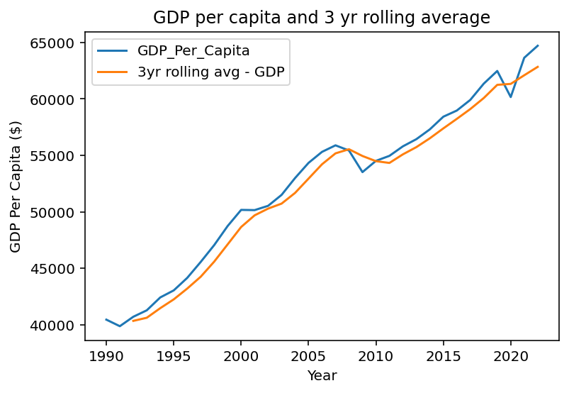
6. When working with large datasets, it can sometimes pay off to be mindful of what data types you are using for each variable.
a. Create a new column, Continent_Category by converting the Continent column to a [category](https://pandas.pydata.org/docs/user_guide/categorical.html).
b. Use the memory_usage method to compare the memory used by the original Continent column compared to the category version.
c. You can also sometimes get speedups for groupby operations by using category datatypes. In Jupyter, if you want to estimate how long it takes to run a block of code, you can add the %%timeit magic to the top of a cell. Compare doing a groupby + aggregation on the original Continent column compared to the Continent_Category column.
d. You can also sometimes save memory usage by adjusting the size that is stored for integer values. By default, the int64 type is used which can store values between –9223372036854775808 and 9223372036854775807. However, for the Year variable, we really don't need that large of a range. We could get by with a 16 bit integer, whose range is -32768 to 32768. Convert the Year column to int16 type and then compare the memory usage.
e. Finally, you don't have to make these datatype changes after the data has been read in. Add some parameters to the read_csv call that imports the GDP data. Read in only the needed columns (not the Value Footnotes column). Also, read in the Country or Area column as a category type and the Year column as an int16 type.gdp_le['Continent_Category'] = gdp_le["Continent"].astype("category")
gdp_le['Year'] = gdp_le['Year'].astype('int16')
gdp_le.memory_usage()
gdp_df_bonus = pd.DataFrame(pd.read_csv("../data/gdp_per_capita.csv", usecols=range(0,3), dtype={'Year':'int16', 'Country or Area':'category'}))
display(gdp_df_bonus)
gdp_df_bonus.memory_usage()| Country or Area | Year | Value | |
|---|---|---|---|
| 0 | Afghanistan | 2021 | 1517.016266 |
| 1 | Afghanistan | 2020 | 1968.341002 |
| 2 | Afghanistan | 2019 | 2079.921861 |
| 3 | Afghanistan | 2018 | 2060.698973 |
| 4 | Afghanistan | 2017 | 2096.093111 |
| ... | ... | ... | ... |
| 7657 | Zimbabwe | 1994 | 2670.106615 |
| 7658 | Zimbabwe | 1993 | 2458.783255 |
| 7659 | Zimbabwe | 1992 | 2468.278257 |
| 7660 | Zimbabwe | 1991 | 2781.787843 |
| 7661 | Zimbabwe | 1990 | 2704.757299 |
7662 rows × 3 columns
Index 128
Country or Area 25556
Year 15324
Value 61296
dtype: int64